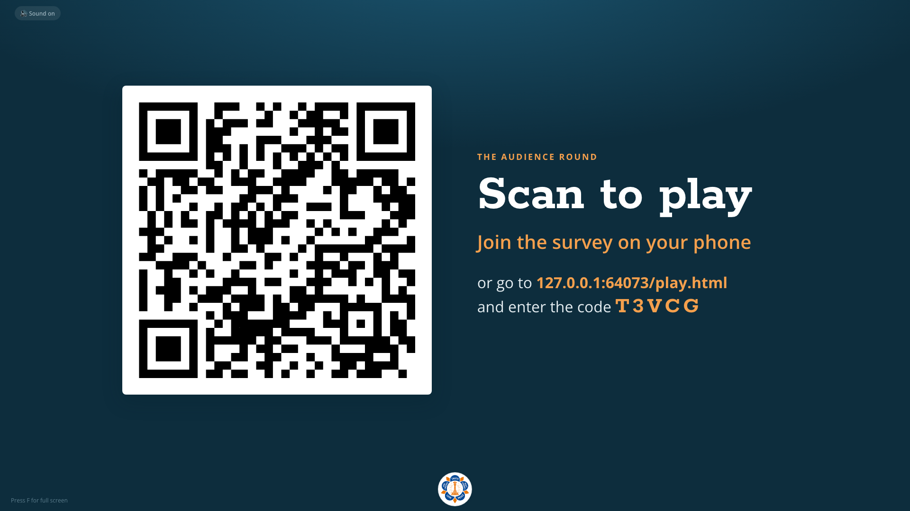
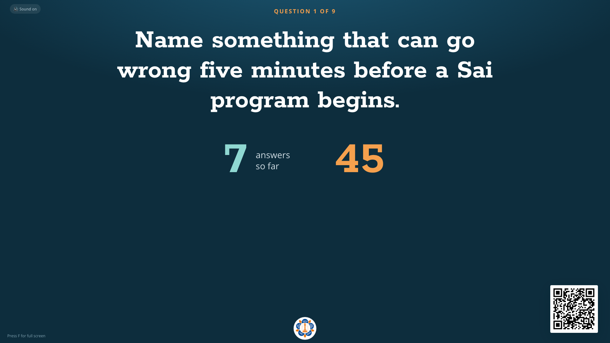
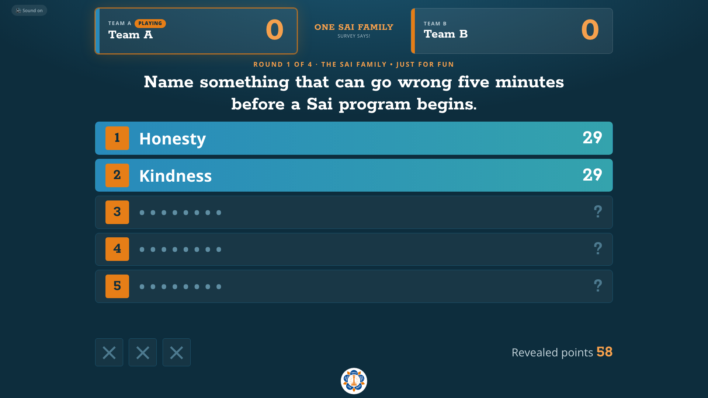
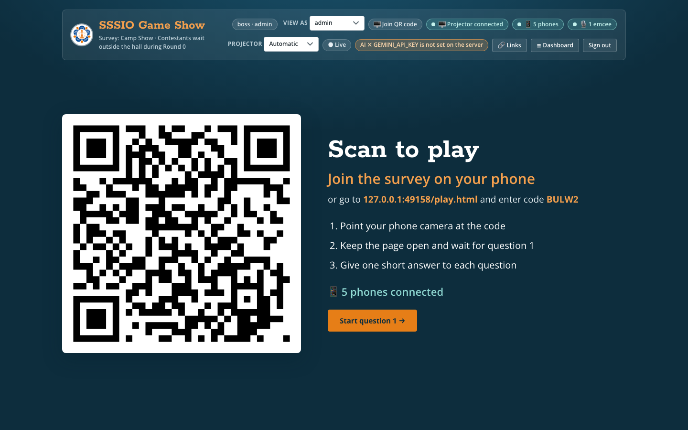
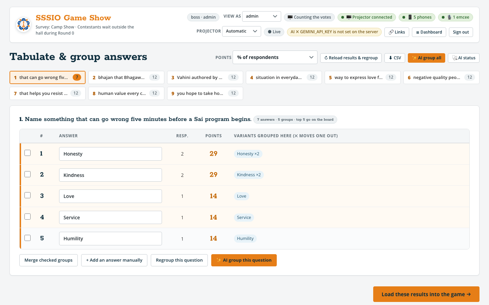
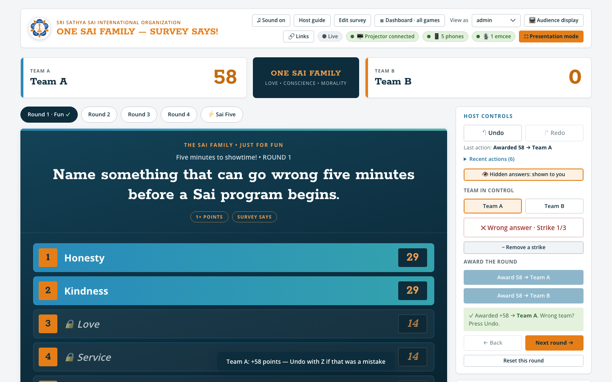
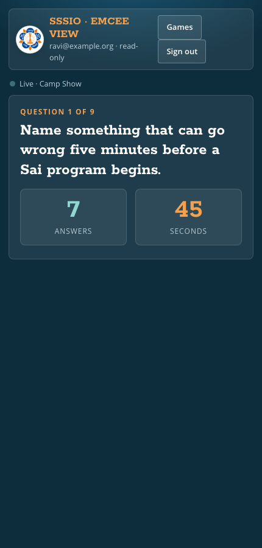
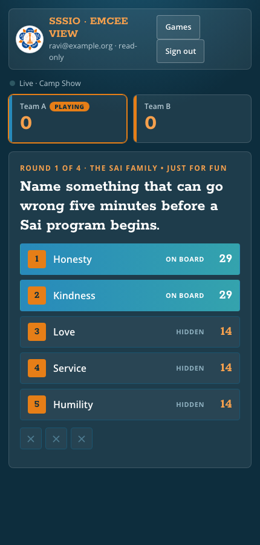
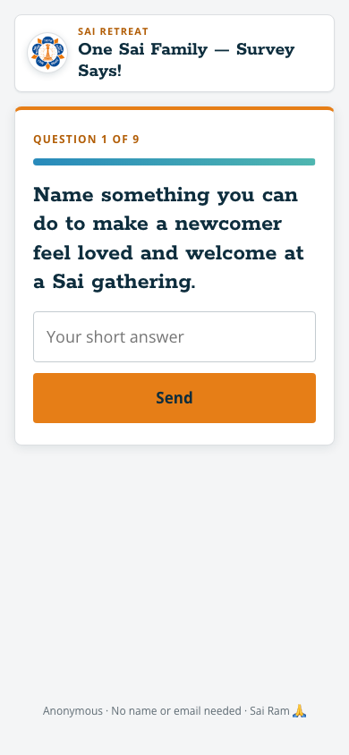
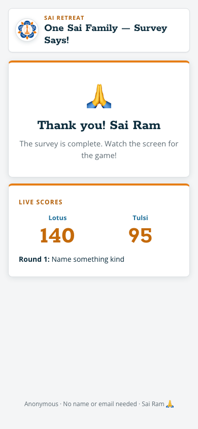

A Family-Feud-style game for a Sai retreat. The audience answers a short survey on their phones; their answers become the board that two teams then play against. Everything runs from one web address, gameshow.sathyasai.org, with a different page for each job.
What the whole hall sees, and the laptop wired to the speakers. It runs by itself: join QR code, each question with a live count, the game board, and every sound. Nobody touches it.
Runs the show. Sees everything, controls everything, and can undo any mistake. This is the only laptop that runs the game.
Read-only. Sees the hidden answers, strikes and scores, and the survey as it happens, so the emcee always knows what to say next.
One short answer per question, then live scores. No sign-in, no name, nothing to install.
The server keeps everything and pushes changes to every screen within a fraction of a second. If a screen loses its connection it reconnects by itself and catches up.
The tech, admins and the emcee sign in with a one-time email link (type your email on the sign-in page). An admin adds people in the Team tab. The projector and the audience need no sign-in.
Admin — everything, including the question bank and the team.
Tech — runs the show.
Host — the emcee's read-only view.
Timings are a guide: they depend on how many survey questions you use and how long each is open (45 seconds by default; the tech can add 15 seconds or close early).
| Phase | Projector laptop shows | Tech does | Emcee phone sees | Audience phones |
|---|---|---|---|---|
| Beforesetup | "The program will begin shortly", then the join QR code, the code, and how many phones have joined. | Signs in, picks the questions, creates the survey, presses Launch. Checks the status chips (projector, phones, emcee). | Opens the emcee page, picks the show: "waiting for the first question". | Scan the QR code or type the code. |
| 1. Surveyabout 8–10 min | Each question in big type, a live answer count and a countdown. Chime on start, ticks in the last 5 s, buzzer at zero. | Start question, then Close now, +15 s or Next question. Watches the count rise. | The same question, the answer count and seconds left. | Type one short answer. Can change it until time is up. |
| 2. Countingabout 3–5 min | "Counting the votes…", then "Thank you, audience! Contestants, please come up." | Finish & tabulate, AI group all, quick check of the groups, Load results into the game, set team names. | "The tech is counting the votes", then "Invite the contestants up". | "Thank you" and the live scoreboard. |
| 3. The game4 rounds, about 20 min | The board with revealed answers, strikes, both team scores, the STEAL banner. Ding on a reveal, buzzer on a strike, fanfare and applause on an award. | Reveals answers as teams guess (1–5), adds strikes (X), awards the round (A/B), moves to the next round. Z undoes. | The question, all answers (hidden ones too), which are on the board, strikes, scores and any host cue. | Live scores on their phones. |
| 4. Sai FiveFast Money, about 5 min | The five questions, then the answers and points once revealed. | Picks the closest survey answer for each team's responses, then Award points (double points). | The five questions with every survey answer. | Live scores. |
| 5. Finishabout 2 min | Final result: the winning team and both scores. | Optional: soundboard applause and fanfare. Make a backup afterwards. | Final scores. | Final scores. |
This is the laptop connected to the projector and the hall speakers. Set it up once and leave it alone for the whole event.



Ding on a reveal · buzzer on a strike · fanfare and applause on an award · chime when a question opens · ticks in the last 5 seconds · time-up buzzer · steal alert · intro music when the game begins. Undoing never makes a sound. The tech has a soundboard for extras.
A small red "Reconnecting" dot appears in the corner. The page reconnects by itself and catches up. The tech sees at once if the projector is not connected.


Z undoes the last thing, whatever it was; Shift+Z redoes. It covers reveals, hides, strikes, who has control, awards to the wrong team, score corrections and Sai Five. The panel lists recent actions.

On the board you see every answer, marked ON BOARD or hidden, with its points; the strikes; both scores; the STEAL banner; and any note for the host. It is read-only, so nothing can be changed by accident.


It is anonymous: no name, email or sign-in. If someone answers after the question closed, the phone says so.

